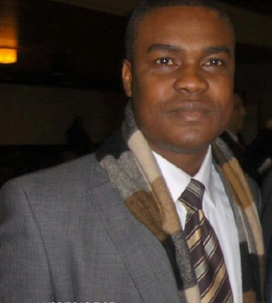

Welcome!
I’m a Business Systems Strategist, Product Development Lead, an Entrepreneurial and Product Coach with over 30 years of hands-on leadership experience across Europe and Africa, guiding organizations and startups from concept to real-world impact. Here are links connecting you to my professional pages where you can learn about my skills, experience, and projects.
GitHub Profile Medium LinkedIn
With over 30 years of industry experience, I specialize in turning business visions into scalable, high-impact products and services. My career spans Retail Banking, Health Services, Corporate Auditing, Business Development, Manufacturing, and Software Development, delivering transformative outcomes for over 1,000 SMEs and enterprise clients across Europe and Africa.
What drives my work is a simple but powerful mantra: Understand. Innovate. Deliver (UID).
This philosophy has enabled me to lead operational transformations that reduce risk, improve service delivery, enhance product quality, and maximize profitability for businesses across diverse sectors.
At the heart of my strategy is a commitment to AI-powered decision-making and automation. I help businesses leverage data and modern technologies to build smarter systems, anticipate market trends, and improve user experience at every stage of the product lifecycle—from ideation to execution.
My professional development has been shaped by globally recognized leadership programs such as the McKinsey Forward Program, where I honed the art of values-driven leadership, empathy, and strategic adaptability. I’ve also taken part in hands-on product innovation labs with Pendo, Panda, HP, AWS, and Microsoft Azure, ensuring I stay ahead of evolving tech and user demands.
Throughout my journey, I’ve worn many hats—Product Manager, Product Owner, Scrum Master, Business Analyst, Systems Auditor, and Technical Writer—always connecting business goals to agile execution through clear strategy, systems thinking, and human-centered design.
📩 Let’s connect. Visit my LinkedIn profile or reach out directly fred@lewishamultisolutions.com to discuss how we can turn your ideas into success stories.
